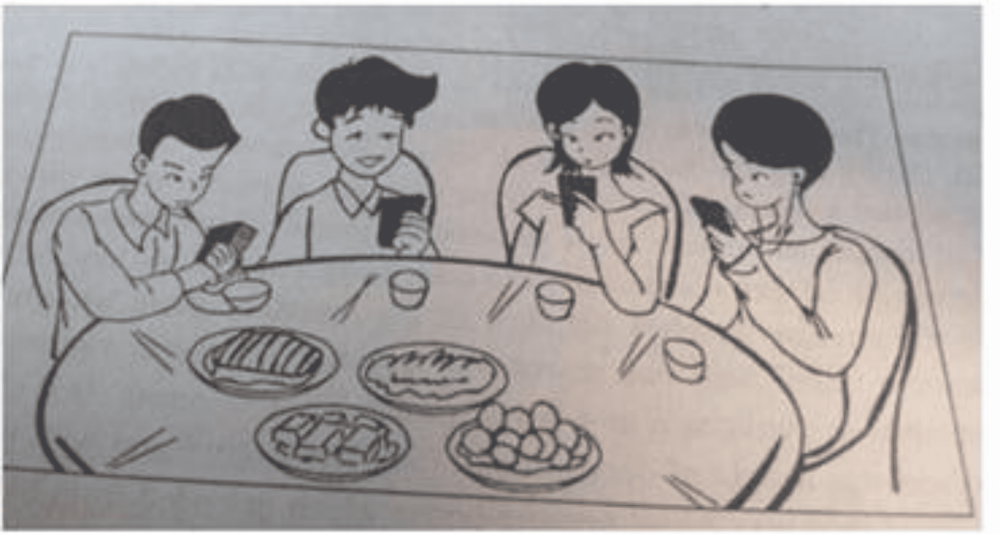

*2015年全国硕士研究生入学考试**英语**一试题（一）*
*Section I Use of English*
*Directions:*
*Read the following text. Choose the best word(s) for each numbered blank and mark A, B, C or D on ANSWER SHEET 1. (10 points)*
Though not biologically related, friends are as “related” as fourth cousins, sharing about 1% of genes. That is 1 a study,published from the University of California and Yale University in the Proceedings of the National Academy of Sciences, has 2 .
The study is a genome-wide analysis conducted 3 1932 unique subjects which 4 pairs of unrelated friends and unrelated strangers. The same people were used in both 5.
While 1% may seem 6 , it is not so to a geneticist. As co-author of the study James Fowler, professor of medical genetics at UC San Diego, says, “Most people do not even 7their fourth cousins but somehow manage to select as friends the people who 8 our kin.”
The study 9 found that the genes for smell were something shared in friends but not genes for immunity. Why this similarity exists in smell genes is difficult to explain, for now. 10, as the team suggests, it draws us to similar environments but there is more 11 it. There could be many mechanisms working together that 12us in choosing genetically similar friends 13 “functional kinship” of being friends with 14 !
One of the remarkable findings of the study was that the similar genes seem to be evolving 15 than other genes. Studying this could help 16 why human evolution picked pace in the last 30,000 years, with social environment being a major 17 factor.
The findings do not simply explain people’s 18to befriend those of similar 19 backgrounds, say the researchers. Though all the subjects were drawn from a population of European extraction, care was taken to 20that all subjects, friends and strangers were taken from the same population.
1.[A] when [B] why [C] how [D] what
2.[A] defended [B] concluded [C] withdrawn [D] advised
3.[A] for [B] with [C] on [D] by
4.[A] compared [B] sought [C] separated [D] connected
5.[A] tests [B] objects [C] samples [D] examples
6.[A] insignificant [B] unexpected [C] unreliable [D] incredible
7.[A] visit [B] miss [C] seek [D] know
8.[A] resemble [B] influence [C] favor [D] surpass
9.[A] again [B] also [C] instead [D] thus
10.[A] Meanwhile [B] Furthermore [C] Likewise [D] Perhaps
11.[A] about [B] to [C] from [D] like
12.[A] drive [B] observe [C] confuse [D] limit
13.[A] according to [B] rather than [C] regardless of [D] along with
14.[A] chances [B] responses [C] missions [D] benefits
15.[A] later [B] slower [C] faster [D] earlier
16.[A] forecast [B] remember [C] understand [D] express
17.[A] unpredictable [B] contributory [C] controllable [D] disruptive
18.[A] endeavor [B] decision [C] arrangement [D] tendency
19.[A] political [B] religious [C] ethnic [D] economic
20.[A] see [B] show [C] prove [D] tell
*Section ⅡReading Comprehension*
*Part A*
*Directions:*
*Read the following four texts. Answer the questions below each text by choosing A, B, C or D. Mark your answers on the ANSWER SHEET 1. (40 points)*
*Text1*
King Juan Carlos of Spain once insisted “kings don’t abdicate, they die in their sleep.” But embarrassing scandals and the popularity of the republican left in the recent Euro-elections have forced him to eat his words and stand down. So, does the Spanish crisis suggest that monarchy is seeing its last days? Does that mean the writing is on the wall for all European royals, with their magnificent uniforms and majestic lifestyles?
The Spanish case provides arguments both for and against monarchy. When public opinion is particularly polarised, as it was following the end of the Franco regime, monarchs can rise above “mere”politics and “embody” a spirit of national unity.
It is this apparent transcendence of politics that explains monarchs’ continuing popularity as heads of state. And so, the Middle East excepted, Europe is the most monarch-infested region in the world, with 10 kingdoms (not counting Vatican City and Andorra). But unlike their absolutist counterparts in the Gulf and Asia, most royal families have survived because they allow voters to avoid the difficult search for a non-controversial but respected public figure.
Even so, kings and queens undoubtedly have a downside. Symbolic of national unity as they claim to be, their very history—and sometimes the way they behave today——embodies outdated and indefensible privileges and inequalities. At a time when Thomas Piketty and other economists are warning of rising inequality and the increasing power of inherited wealth, it is bizarre that wealthy aristocratic families should still be the symbolic heart of modern democratic states.
The most successful monarchies strive to abandon or hide their old aristocratic ways. Princes and princesses have day-jobs and ride bicycles, not horses (or helicopters). Even so, these are wealthy families who party with the international 1%, and media intrusiveness makes it increasingly difficult to maintain the right image.
While Europe’s monarchies will no doubt be smart enough to survive for some time to come, it is the British royals who have most to fear from the Spanish example.
It is only the Queen who has preserved the monarchy’s reputation with her rather ordinary (if well-heeled) granny style. The danger will come with Charles, who has both an expensive taste of lifestyle and a pretty hierarchical view of the world. He has failed to understand that monarchies have largely survived because they provide a service——as non-controversial and non-political heads of state. Charles ought to know that as English history shows, it is kings, not republicans, who are the monarchy’s worst enemies.
*21. According to the first two Paragraphs,* *King Juan Carlosof Spain________.*
[A] used to enjoy high public support [B] was unpopular among European royals
[C] eased his relationship with his rivals [D] ended his reign in embarrassment
*22. Monarchs are kept as heads of state in Europe mostly________.*
[A] owing to their undoubted and respectable status [B] to achieve a balance between tradition and reality
[C] to give voters more public figures to look up to [D] due to their everlasting political embodiment
*23. Which of the following is shown to be odd, according to Paragraph 4?*
[A] Aristocrats’ excessive reliance on inherited wealth. [B] The role of the nobility in modern democracies.
[C] The simple lifestyle of the aristocratic families. [D] The nobility’s adherence to their privileges.
*24. The British royals “have most to fear” because Charles________.*
[A] takes a rough line on political issues [B] fails to change his lifestyle as advised
[C] takes republicans as his potential allies [D] fails to adapt himself to his future role
*25. Which of the following is the best title of the text?*
[A] Carlos, Glory and Disgrace Combined [B] Charles, Anxious to Succeed to the Throne
[C] Carlos, a Lesson for All European Monarchs [D] Charles, Slow to React to the Coming Threats
*Text2*
Just how much does the Constitution protect your digital data? The Supreme Court will now consider whether police can search the contents of a mobile phone without a warrant if the phone is on or around a person during an arrest.
California has asked the justices to refrain from a sweeping ruling, particularly one that upsets the old assumption that authorities may search through the possessions of suspects at the time of their arrest. It is hard, the state argues, for judges to assess the implications of new and rapidly changing technologies.
The court would be recklessly modest if it followed California’s advice. Enough of the implications are discernable, even obvious, so that the justices can and should provide updated guidelines to police,lawyers and defendants.
They should start by discarding California’s lame argument that exploring the contents of a smartphone — a vast storehouse of digital information — is similar to, say, going through a suspect’s purse. The court has ruled that police don’t violate the Fourth Amendment when they go through the wallet or pocketbook of an arrestee without a warrant. But exploring one’s smartphone is more like entering his or her home. A smartphone may contain an arrestee’s reading history, financial history, medical history and comprehensive records of recent correspondence. The development of “cloud computing,” meanwhile, has made that exploration so much the easier.
Americans should take steps to protect their digital privacy. But keeping sensitive information on these devices is increasingly a requirement of normal life. Citizens still have a right to expect private documents to remain private and protected by the Constitution’s prohibition on unreasonable searches.
As so often is the case, stating that principle doesn’t ease the challenge of line-drawing. In many cases, it would not be overly burdensome for authorities to obtain a warrant to search through phone contents. They could still invalidate Fourth Amendment protections when facing severe,urgent circumstances, and they could take reasonable measures to ensure that phone data are not erased or altered while waiting for a warrant. The court, though, may want to allow room for police to cite situations where they are entitled to more freedom.
But the justices should not swallow California’s argument whole. New, disruptive technology sometimes demands novel applications of the Constitution’s protections. Orin Kerr, a law professor, compares the explosion and accessibility of digital information in the 21st century with the establishment of automobile use as a virtual necessity of life in the 20th: The justices had to specify novel rules for the new personal domain of the passenger car then; they must sort out how the Fourth Amendment applies to digital information now.
*26. The Supreme Court will work out whether, during an arrest, it is legitimate to______.*
[A] prevent suspects from deleting their phone contents
[B] search for suspects’ mobile phones without a warrant
[C] check suspects’ phone contents without being authorized
[D] prohibit suspects from using their mobile phones
*27. The author’s attitude toward California’s argument is one of________.*
[A] disapproval [B] indifference [C] tolerance [D] cautiousness
*28. The author believes that exploring one’s phone contents is comparable to________.*
[A] getting into one’s residence [B] handling one’s historical records
[C] scanning one’s correspondences [D] going through one’s wallet
*29. In Paragraph 5 and 6, the author shows his concern that________.*
[A] principles are hard to be clearly expressed [B] the court is giving police less room for action
[C] citizens’ privacy is not effectively protected [D] phones are used to store sensitive information
*30. Orin Kerr’s comparison is quoted to indicate that________.*
[A] the Constitution should be implemented flexibly
[B] new technology requires reinterpretation of the Constitution
[C] California’s argument violates principles of the Constitution
[D] principles of the Constitution should never be altered
*Text3*
The journal Science is adding an extra round of statistical checks to its peer-review process, editor-in-chief Marcia McNutt announced today. The policy follows similar efforts from other journals, after widespread concern that basic mistakes in data analysis are contributing to the irreproducibility of many published research findings.
“Readers must have confidence in the conclusions published in our journal,” writes McNutt in an editorial. Working with the American Statistical Association, the journal has appointed seven experts to a statistic board of reviewing editors (SBoRE). Manuscript will be flagged up for additional scrutiny by the journal’s internal editors, or by its existing Board of Reviewing Editors or by outside peer reviewers. The SBoRE panel will then find external statisticians to review these manuscripts.
Asked whether any particular papers had impelled the change, McNutt said: “The creation of the ‘statistics board’ was motivated by concerns broadly with the application of statistics and data analysis in scientific research and is part of Science’s overall drive to increase reproducibility in the research we publish.”
Giovanni Parmigiani, a biostatistician at the Harvard School of Public Health, a member of the SBoRE group, says he expects the board to “play primarily an advisory role.” He agreed to join because he “found the foresight behind the establishment of the SBoRE to be novel, unique and likely to have a lasting impact. This impact will not only be through the publications in Science itself, but hopefully through a larger group of publishing places that may want to model their approach after Science.”
John Ioannidis, a physician who studies research methodology, says that the policy is “a most welcome step forward” and “long overdue.” “Most journals are weak in statistical review, and this damages the quality of what they publish. I think that, for the majority of scientific papers nowadays, statistical review is more essential than expert review,” he says. But he noted that biomedical journals such as Annals of Internal Medicine, the Journal of the American Medical Association and The Lancet pay strong attention to statistical review.
Professional scientists are expected to know how to analyze data, but statistical errors are alarmingly common in published research, according to David Vaux, a cell biologist. Researchers should improve their standards, he wrote in 2012, but journals should also take a tougher line, “engaging reviewers who are statistically literate and editors who can verify the process.” Vaux says that Science’s idea to pass some papers to statisticians “has some merit, but a weakness is that it relies on the board of reviewing editors to identify ‘the papers that need scrutiny’ in the first place”.
*31. It can be learned from Paragraph 1 that________.*
[A] Science intends to simplify its peer-review process [B] journals are strengthening their statistical checks
[C] few journals are blamed for mistakes in data analysis [D] lack of data analysis is common in research projects
*32. The phrase “flagged up” (Para. 2) is the closest in meaning to________.*
[A] found [B] marked [C] revised [D] stored
*33. Giovanni Parmigiani believes that the establishment of the SBoRE may________.*
[A] pose a threat to all its peers [B] meet with strong opposition
[C] increase Science’s circulation [D] set an example for other journals
*34. David Vaux holds that what* **Science** *is doing now________.*
[A] adds to researchers’ workload [B] diminishes the role of reviewers
[C] has room for further improvement [D] is to fail in the foreseeable future
*35. Which of the following is the best title of the text?*
[A] Science Joins Push to Screen Statistics in Papers [B] Professional Statisticians Deserve More Respect
[C] Data Analysis Finds Its Way onto Editors’ Desks [D] Statisticians Are Coming Back with Science
*Text4*
Two years ago, Rupert Murdoch’s daughter, Elisabeth, spoke of the “unsettling dearth of integrity across so many of our institutions.” Integrity had collapsed, she argued, because of a collective acceptance that the only “sorting mechanism” in society should be profit and the market. But “it’s us, human beings, we the people who create the society we want, not profit.”
Driving her point home, she continued: “It’s increasingly apparent that the absence of purpose, of a moral language within government, media or business could become one of the most dangerous goals for capitalism and freedom.” This same absence of moral purpose was wounding companies such as News International, she thought, making it more likely that it would lose its way as it had with widespread illegal telephone hacking .
As the hacking trial concludes——finding guilty one ex-editor of the News of the World, Andy Coulson, for conspiring to hack phones, and finding his predecessor, Rebekah Brooks, innocent of the same charge —the wider issue of dearth of integrity still stands.Journalists are known to have hacked the phones of up to 5,500 people. This is hacking on an industrial scale, as was acknowledged by Glenn Mulcaire, the man hired by the News of the World in 2001 to be the point person for phone hacking. Others await trial. This long story still unfolds.
In many respects, the dearth of moral purpose frames not only the fact of such widespread phone hacking but the terms on which the trial took place. One of the astonishing revelations was how little Rebekah Brooks knew of what went on in her newsroom, how little she thought to ask and the fact that she never inquired how the stories arrived. The core of her successful defence was that she knew nothing.
In today’s world, it has become normal that well-paid executives should not be accountable for what happens in the organizations that they run. Perhaps we should not be so surprised. For a generation, the collective doctrine has been that the sorting mechanism of society should be profit. The words that have mattered are efficiency, flexibility, shareholder value, business–friendly, wealth generation, sales, impact and, in newspapers, circulation. Words degraded to the margin have been justice, fairness, tolerance, proportionality and accountability.
The purpose of editing the News of the World was not to promote reader understanding, to be fair in what was written or to betray any common humanity. It was to ruin lives in the quest for circulation and impact. Ms Brooks may or may not have had suspicions about how her journalists got their stories, but she asked no questions, gave no instructions—nor received traceable, recorded answers.
*36. According to the first two paragraphs, Elisabeth was upset by________.*
[A] the consequences of the current sorting mechanism
[B] companies’ financial loss due to immoral practices
[C] governmental ineffectiveness on moral issues
[D] the wide misuse of integrity among institutions
*37. It can be inferred from Paragraph 3 that________.*
[A] Glem Mulcaire may deny phone hacking as a crime
[B] more journalists may be found guilty of phone hacking
[C] Andy Coulson should be held innocent of the charge
[D] phone hacking will be accepted on certain occasions
*38. The author believes the Rebekah Books’s defence________.*
[A] revealed a cunning personality [B] centered on trivial issues
[C] was hardly convincing [D] was part of a conspiracy
*39. The author holds that the current collective doctrine shows________.*
[A] generally distorted values [B] unfair wealth distribution
[C] a marginalized lifestyle [D] a rigid moral code
*40. Which of the following is suggested in the last paragraph?*
[A] The quality of writing is of primary importance. [B] Common humanity is central to news reporting.
[C] Moral awareness matters in editing a newspaper. [D] Journalists need stricter industrial regulations.
*Part B*
*Directions:*
*In the following text, some sentences have been removed. For Questions 41-45, choose the most suitable one from the fist A-G to fit into each of the numbered blanks. There are two extra choices, which do not fit in any of the gaps. Mark your answers on ANSWER SHEET. (10 points)*
How does your reading proceed? Clearly you try to comprehend, in the sense of identifying meanings for individual words and working out relationships between them, drawing on your implicit knowledge of English grammar. (41) _______.You begin to infer a context for the text, for instance, by making decisions about what kind of speech event is involved. Who is making the utterance, to whom, when and where.
The ways of reading indicated here are without doubt kinds of comprehension. But they show comprehension to consist not just of passive assimilation but of active engagement in inference and problem-solving. You infer information you feel the writer has invited you to grasp by presenting you with specific evidence and clues. (42) _______
Conceived in this way, comprehension will not follow exactly the same track for each reader. What is in question is not the retrieval of an absolute, fixed or “true” meaning that can be read off and checked for accuracy, or some timeless relation of the text to the world. (43) _______
Such background material inevitably reflects who we are. (44) _______.This doesn’t, however, make interpretation merely relative or even pointless. Precisely because readers from different historical periods, places and social experiences produce different but overlapping readings of the same words on the page—including for texts that engage with fundamental human concerns—debates about texts can play an important role in social discussion of beliefs and values.
How we read a given text also depends to some extent on our particular interest in reading it. (45) _______. Such dimensions of reading suggest—as others introduced later in the book will also do—that we bring an implicit (often unacknowledged) agenda to any act of reading. It doesn’t then necessarily follow that one kind of reading is fuller, more advanced or more worthwhile than another. Ideally, different kinds of reading inform each other, and act as useful reference points for and counterbalances to one another. Together, they make up the reading component of your overall literacy, or relationship to your surrounding textual environment.
*[A]* Are we studying that text and trying to respond in a way that fulfils the requirement of a given course? Reading it simply for pleasure? Skimming it for information? Ways of reading on a train or in bed are likely to differ considerably from reading in a seminar room.
*[B]* Factors such as the place and period in which we are reading, our gender, ethnicity, age and social class will encourage us towards certain interpretations but at the same time obscure or even close off others.
*[C]* If you are unfamiliar with words or idioms, you guess at their meaning, using clues presented in the context. On the assumption that they will become relevant later, you make a mental note of discourse entities as well as possible links between them.
****[D]****In effect, you try to reconstruct the likely meanings or effects that any given sentence, image or reference might have had: These might be the ones the author intended.
****[E]****You make further inferences, for instance, about how the text may be significant to you, or about its validity—inferences that form the basis of a personal response for which the author will inevitably be far less responsible.
****[F]****In plays，novels and narrative poems, characters speak as constructs created by the author, not necessarily as mouthpieces for the author’s own thoughts.
****[G]****Rather, we ascribe meanings to texts on the basis of interaction between what we might call textual and contextual material: between kinds of organization or patterning we perceive in a text’s formal structures (so especially its language structures) and various kinds of background, social knowledge, belief and attitude that we bring to the text.
*Part C*
*Directions:*
*Read the following text carefully and then translate the underlined segments into Chinese. Your translation should be written neatly on the ANSWER SHEET. (10 points)*
Within the span of a hundred years, in the seventeenth and early eighteenth centuries, a tide of emigration—one of the great folk wanderings of history—swept from Europe to America. (46) This movement, driven by powerful and diverse motivations, built a nation out of a wilderness and, by its nature, shaped the character and destiny of an uncharted continent.
(47) The United States is the product of two principal forces—the immigration of European peoples with their varied ideas, customs, and national characteristics and the impact of a new country which modified these traits. Of necessity, colonial America was a projection of Europe. Across the Atlantic came successive groups of Englishmen, Frenchmen, Germans, Scots, Irishmen, Dutchmen, Swedes, and many others who attempted to transplant their habits and traditions to the new world. (48) But, the force of geographic conditions peculiar to America, the interplay of the varied national groups upon one another, and the sheer difficulty of maintaining old-world ways in a raw, new continent caused significant changes.These changes were gradual and at first scarcely visible. But the result was a new social pattern which, although it resembled European society in many ways, had a character that was distinctly American.
(49) The first shiploads of immigrants bound for the territory which is now the United States crossed the Atlantic more than a hundred years after the 15th-and-16th-century explorations of North America.In the meantime, thriving Spanish colonies had been established in
Mexico, the West Indies, and South America. These travelers to North America came in small, unmercifully overcrowded craft. During their six- to twelve-week voyage, they survived on barely enough food allotted to them. Many of the ships were lost in storms, many passengers died of disease, and infants rarely survived the journey. Sometimes storms blew the vessels far off their course, and often calm brought unbearably long delay.
To the anxious travelers the sight of the American shore brought almost inexpressible relief. Said one recorder of events, “The air at twelve leagues’ distance smelt as sweet as a new-blown garden.” The colonists’ first glimpse of the new land was a sight of dense woods. 50) The virgin forest with its richness and variety of trees was a real treasure-house which extended from Maine all the way down to Georgia. Here was abundant fuel and lumber. Here was the raw material of houses and furniture, ships and potash, dyes and naval stores.
*Section III Writing*
*Part A*
*51.* *Directions:*
You are going to host a club reading session. Write an email of about 100 words recommending a book to the club members.
You should state reasons for your recommendation.
You should write neatly on the ANSWER SHEET.
*Do not* sign your own name at the end of the letter. Use Li Ming instead.
*Do not* write the address. (10 points)
*Part B*
*52. Directions:*
Write an essay of 160-200 words based on the following drawing. In your essay you should
- describe the drawing briefly
- explain its intended meaning, and
- give your comments
You should write neatly on the ANSWER SHEET. (20 points)
